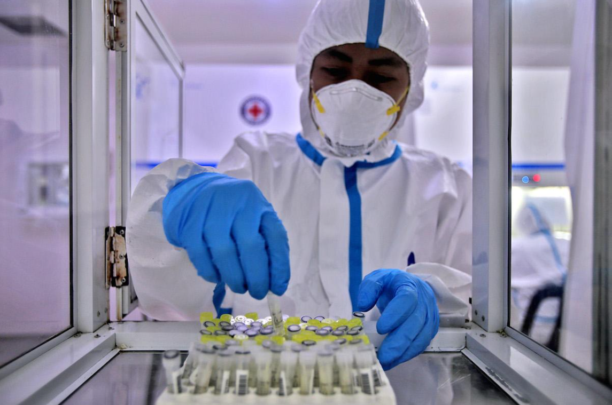

|

Travelers can avail of the saliva reverse transcription polymerase chain reaction (RT-PCR) test before entering the tourist spot Boracay Island as an alternative for the swab test, the Department of Tourism (DOT) said Thursday.
The DOT said the Boracay Inter-Agency Task Force approved the saliva test as a traveler requirement provided that it should be administered by the Philippine Red Cross and testing laboratories that have licenses from the Food and Drug Administration (FDA) and the Department of Health (DOH).
“The Department of Tourism (DOT) welcomes the approval of the saliva RTPCR test as an alternative to the nasopharyngeal swab RTPCR as one of the entry requirements to the island,” the tourism department said in a statement.
The DOT said it is also willing to fund for an “RTPCR or gene expert machine as the local government unit (LGU) of Malay may propose.”
The DOT also recommended to the national government that travelers aged below 15 and above 65 years old should not be prohibited from visiting Boracay Island since it is under modified general community quarantine, provided that the passenger has a valid plane ticket.
Local government units and authorities should also be vigilant for travelers who would violate minimum health standards and other travel requirements, it said.
The Philippine Red Cross previously said its saliva test is as accurate as the RT-PCR, gold standard for COVID-19 testing, with an accuracy rate of 98.23 %
|
|
 AJCE News
AJCE News